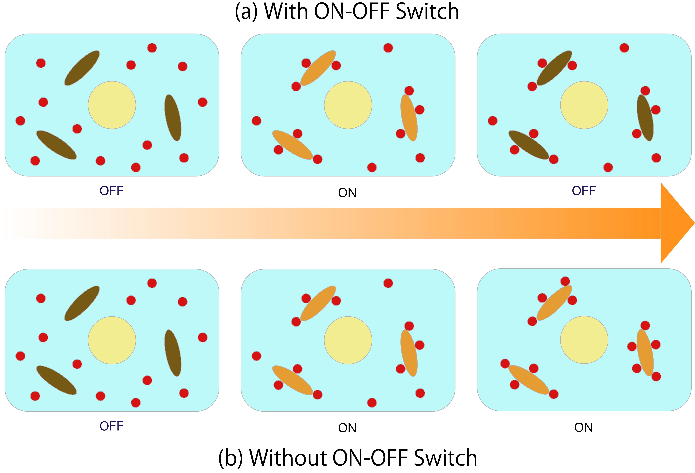
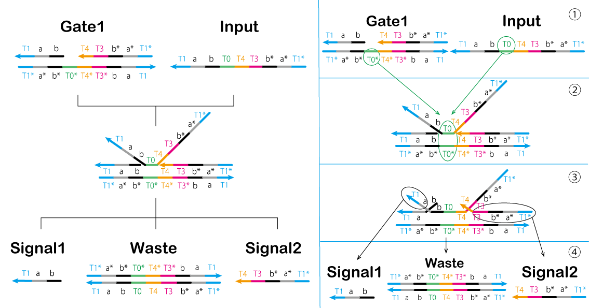
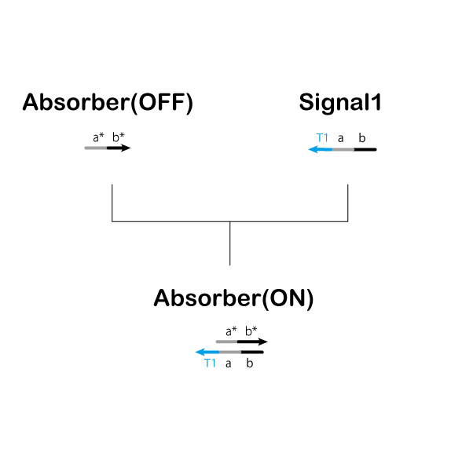
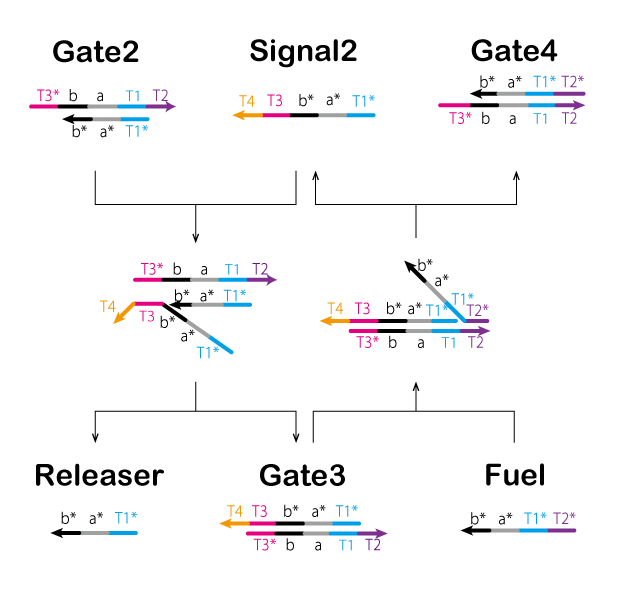

As mentioned in Our Project of Idea, YOKABIO aims to establish a control system for a new transmission system using DNA circuits.
As an example, we describe the reduction of ATP levels and methods for controlling these levels.
This page mainly explains two points. The first is the mechanism of absorbing ATP, while the second is the DNA circuit controlling the mechanism (Click image to enlarge).
We use the polymerase reaction as a method of absorbing ATP from cells. Polymerase is an enzyme that produces nucleic acids or chains such as DNA or RNA [7].
In this project, we used double-stranded DNA containing a T7 promoter sequence as a template and NTPs (nucleoside triphosphates) as substrates.
Additionally, we used T7 RNA polymerase, which produces complementary single-stranded RNA for a template DNA downstream of the promoter (Figure 1, Video 1).
Figure 1: Polymerase Reaction
Video 1: Polymerase Reaction(Video)
The reason for using T7 RNA polymerase is that DNA polymerase uses dNTP as a matrix and RNA polymerase uses NTP as a matrix,
and thus RNA polymerase can consume ATP. T7 RNA Polymerase is useful because it detects specific base sequences and is convenient for use in our project using mismatch base pairs.
Figure 2: Promoter Design
Video 2: Absorb ATP(Video)
DNA Circuit
1. Scheme of DNA Circuit
Although we can reduce ATP using the above polymerase, ATP is essential for in vivo processes.
Therefore, the loss of ATP must be controlled.
T7 RNA polymerase recognizes double-stranded DNA such as that shown in Figure 3(a) to begin the polymerization reaction.
Therefore, we set the state of double-stranded DNA shown in Figure 3(a) as switched ON and single-stranded DNA shown in Figure 3(b) as switched OFF.
Thus, we are able to change the ON-OFF state of the polymerase reaction. The effects of this process in cells are shown in Figure 4.
Figure 3: ON-OFF Expression of T7RNA Polymerase
Figure 4: Image of ON State & OFF State in Cells
As shown in Figure 3, we can switch the system on and off by adjusting the temperature and through dissociating and coupling. However, because this system is used in cells, it may be impossible to control the system by heating and cooling. Additionally, when using enzymes, it is necessary to strictly control the temperature and pH value, making it difficult to apply this system in live cells. Therefore, we designed a DNA circuit without enzymes that utilizes only the DNA strand displacement reaction, which is expected to be useful in vivo. A diagram of our intended switch is shown. The area value in this figure represents the total ATP consumption by the Absorber. ATP consumption can be controlled by changing the Absorber(ON) time.
Figure 5 shows the inside ofthe cell with and without ON-OFF Switch in the DNA circuit. Then, the arrows indicate the passage of time, (and when going to the right, it indicates that time has passed.)If switching from ON to OFF is impossible, Absorber absorbs all ATP as shown in (b), and ATP disappears from within the cell. In order to prevent this, wewill useON-OFF Switch. In addition, since this Absorber keeps absorbing ATP only for the ON state time, it is possible to adjust the ATP amount by adjusting the ON time (a).
Figure 5: Comparison with and without the ON-OFF Switch
Finally, we reduced ATP levels and switched the ON-OFF state; the DNA circuit is shown in Figure 6 (The double-strand composed of a and a* is the T7 promoter sequence. Additionally, a double-strand composed of b and b* causes RNA to consume ATP).
Elements displayed in red letters are to be inserted beforehand in the cell, and elements displayed in black letters except "Input" are generated by reaction.
We used a seesaw gate to control the time between the ON state and OFF state. The seesaw gate is an arithmetic element such as that shown in Figure 7 for DNA molecular reactions [9][10]. It produces an output for inputs exceeding a preset threshold, but causes a delay. We predicted that this delay is useful for adjusting the times in the ON→OFF states and controlling ATP absorption. The right part of Figure 6 shows the seesaw gate (Its simulation is described in the Proof of Concept and its advantages are described in the Discussion of Application).
Figure 7: Arithmetic Element
This circuit was composed of four DNA strand displacement reaction processes. Each of these reaction processes is explained below in the DNA Circuit Operation section.
3. DNA Circuit Operation
First Process▼
First, the circuit starts by adding the Input.
In the first process, we aimed to prepare models of Signal1 and Signal2 using a strand displacement reaction (Figure 8, Figure 9).
The output Signal 1 and single-stranded the Absorber result in hybridization to form double-strands.
Thus, the Absorber is changed from the OFF state to the ON state (Video 3).
① T0* of Gate1 is bound to T0 of Input.
② Gate1 and Input are effectively combined.
③ A part of Gage1 separates from the complex.
④ Signal1, Signal2, and Waste are generated by separating the components.
⑤ Absorber(ON) is generated by Absorber(OFF) and Signal1 (Figure 9).
Figure 8: First Process (1)Figure 9: First Process (2)Video 3: Gate1 & Input
Second Process▼
In the second process, we controlled the reaction using a gate of the threshold concentration.
The threshold value is determined by Threshold. Moreover, Signal2 and Threshold interact to cause a strand displacement reaction and then Signal2 disappears.
Thus, Signal2 must exceed the Threshold concentration for the reaction to proceed (Figure 10, Video 4).
① T3* of Threshold is bound to T3 of Signal2.
② Threshold and Signal2 are effectively combined.
③ A part of Waste and Fuel separates from the complex.
④ Waste and Fuel are generated by separating the components.
Figure 10: Second ProcessVideo 4: Signal2&Threshold
Signal2 exceeding the Threshold concentration enters the Third process,
in which Fuel produced in this process is used.
Third Process▼
In the third process, we perform processing through a chain reaction of the strand displacement reaction known as the seesaw gate (Figure 11, Figure 12, and Video 5).
① T3* of Gate2 is bound to T3 of Signal2.
② Gate2 and Signal2 are effectively combined.
③ A part of Releaser and Gate3 separates from the complex.
④ Releaser and Gate3 are generated by separating the components.
Gate2 produced in previous steps causes a strand displacement reaction with Fuel, and Signal2 is produced again.
①' T2* of Fuel is bound to T2 of Gate3.
②' Fuel and Gate3 are effectively combined.
③' A part of Signal2 and Gate4 separates from the complex.
④' Signal2 and Gate4 are genarated by separating the conponents.
The cycle such as that used in this system is known as a seesaw gate.
Furthermore, this cycle refills Signal2 which is consumed in the Second process and outputs Releaser.
As described above, the Threshold and seesaw gate are used to adjust the time between the ON and OFF states of the Absorber.
Figure 11: Third Process (1)Figure 12 : Third Process (2)Video 5: Seesaw Gate
Final Process▼
In the final process, we aimed to change the double-stranded Absorber into single-stranded Absorber by dissociating Signal1 from double-stranded Absorber.
Thus, we aimed to switch the state of the circuit from ON to OFF (Figure 13, Video 6).
① T1 of Absorber(ON) is bound to T1* of the Releaser.
② Absorber(ON) and Releaser are effectively combined.
③ A part of Absorber(ON) separates from the complex (Signal1).
④ Absorber(OFF) and Waste are generated by separating the components.
Figure 13: Final ProcessVideo 6: Absorber(ON) & Releaser
According to the previous four processes, we switched the state of the circuit(OFF → ON → OFF) automatically.
Thus, single administration of Absorber can be conducted and is convenient.
However, Figure 6 shows two limitations. First, the circuit causes an undesired reaction when it starts. For instance, we mentioned the Input and the Absorber(OFF) here. After the Input is administered, Input and the Absorber(OFF) may undergo hybridization because part of their base sequences is complementary. These domains should be changed to prevent hybridization. However, this is not possible in principle because we the domains of Signal1 and Gate1_under would be changed in response to the Input. The circuit now involves the three undesired reactions listed below.
① Input binds to Absorber(OFF)
② Signal1 binds to Signal2
③ Input binds to Gate2
Second, some double-stranded DNA contains the T7 RNA promoter and the polymerase reaction occurs even when the circuit is not in the ON state. Therefore, we used mismatched base pairs to overcome these limitations.
Mismatched base pair is described in detail in Experiment's
Material & Method.
The circuit diagram of the ATP controller with mismatch base pair added is as follows (Figure 14).
The part surrounded by red in Figure 14 is the part where the mismatch base pair is added.
Figure 14: Scheme of ON-OFF Switch Circuit with Mismatch Base Pair
{kind=link}
.png){kind=link}
.png){kind=link}
.png){kind=link}
{kind=link}
{kind=link}
{kind=link}
{kind=link}
{kind=link}
&Signal1.gif){kind=link}
{kind=link}
{kind=link}
{kind=link}
&Releaser.gif){kind=link}